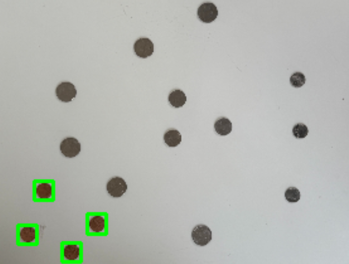

My Projects
On this page, I will show you two of my projects that I have done for my classes. The two projects I worked on are the following:
- A Coin Counter from photographs, made in C++
- A Data Analytics research project about machine learning and Disney+
C++ Coin Counter
In the class Image Processing and Computer Vision, we had us assigned a final project of which we had free will to make anything with the methods we had learned throughout the semester
I ended up with an idea to create a program that could be given photos of coins, and subsequently count them and calculate their total value.

The program takes a photo, such as the one shown above, and would use four sub-algorithms to count the coins in this order:
Pennies
The program searched for pennies first, and this was the easiest coin to find. I simply used a small algorithm to search for objects based on color.
Using a copper penny colored filer, the program was able to isolate and count all the pennies in the image.
Dimes
Next, the program looked for all of the dimes. Dimes was second easiest, because of their uniquely small size.
Using a size filter, dimes were isolated and counted.
Nickels
Nickels were up next, but I had some trouble figuring our how to get the program to differentiate them from the quarters.
Eventually I noticed that nickels would be found without quarters but quarters would never be found without nickels.
What I ended up trying was locating all of the nickels, and then placing a black box cover on top of them so that quarters would have no issues being found.
Quarters
Finally, the program searched for quarters. I simply used a size filter and a color filter to search for the last possible coins in the image.
Recall that nickels are now blurred out, so this part was a real breeze to accomplish.
Following this, the program would then calculate the total value of all the values attained from the previous steps, and return the dollar amount onto the image.
Disney+ Data Analytics Research Project
In the class Intro to Data Analytics, my group and I were assigned a starting topic and article to create a report and powerpoint presentation for.
We were researching Disney+ and machine learning, more specifically, how Disney had aspirations to create Disney+ to establish a presence in the streaming market with the use of machine learning algorithms.
![A screenshot of a slide from the powerpoint presentation, it has text and a tree structure with how Disney's machine learning works. The text, in essence, states that
machine learning and feedback is what makes an algorithm successful, and that results include: higher viewer/subscriber retention, higher show renewal rate, and higher savings.
The tree structure shows machine learning leads to data driven feedback, which leads to success: higher subscriber retention, renewal rate, and savings of over 1 billion dollars annually](media/slide.png)
Our research also included a lot of comparisons to the machine learning algorithms of Netflix, as they were the pioneers in the streaming space, and in a way still are.
Our researh concluded that while Disney needed to inplement a very advanced algorithm to rival other machine learning, it had to be done thoughtfully in order to avoid negative long-term effects, all while still making a steady and ethical profit.